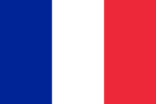
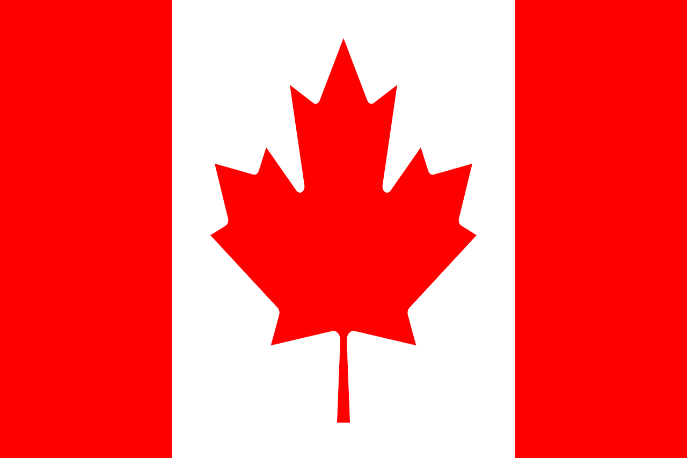

Athlète Francais
Né le 10 février 1992
Détenteur de deux records : un mondial, un d'Europe

retour
Athlète Francais
Né le 10 février 1992
Détenteur de deux records : un mondial, un d'Europe
Originaire de Lorraine, Kévin va s'essayer à divers sports comme le rugby, le tennis, le cross-country, le handball ou encore le ski.
C'est en 2004/2005 qu'il commence l'athlétisme, il participera en juillet 2009 à la première grosse compétition de sa vie, qu'il remportera.
| épreuve | record | lieu | année |
|---|---|---|---|
| 100m | 10s 50 | 2019 | |
| saut en longueur | 7.80m |  | 2018 |
| lancer de poids | 17.08m | 2019 | |
| saut en hauteur | 2.09m | 2012 | |
| 400m | 48s 26 | 2017 | |
| 110m haies | 13s 55 | 2019 | |
| lancer de disques | 52.38m |  |
2018 |
| saut à la perche | 5.45m | 2018 | |
| lancer du javelot | 71.90m | 2018 | |
| 1500m | 4min 18s 04 | 2012 |
| année | record | lieu | |
|---|---|---|---|
| 2009 | Champion du monde cadets: Octatlhon | Bressanone | |
| 2010 | Champion du monde juniors: Décatlhon | Moncton |  |
| 2011 | Champion d'Europe juniors: Décathlon | Tallinn |  |
| 2013 | Coupe d'Europe: Décathlon | Tallinn | |
| 2015 | Aroña pruebas combinadas: Décathlon | Aroña | |
| 2017 | Chamionnat d'Europe en salle: Heptatlon | Belgrade |  |
| 2017 | Championnat du monde: Décathlon | Londres | |
| 2018 | Championnat du monde: Hepathlon | Birmingham | |
| 2018 | Décastar | Talence | |
Au décastar de Talence 2018
Avec 9 126 points il bat alors le record mondial du décathlon, mais aussi le premier athlète à dépasser les 9 100 points